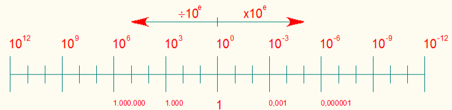
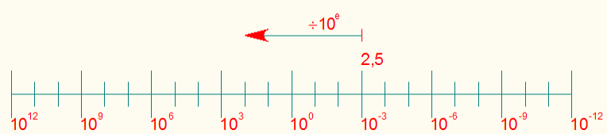
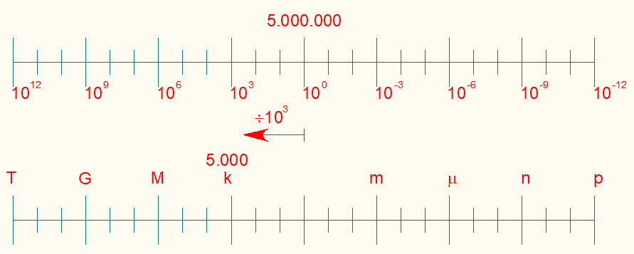
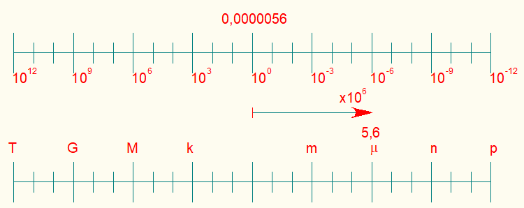
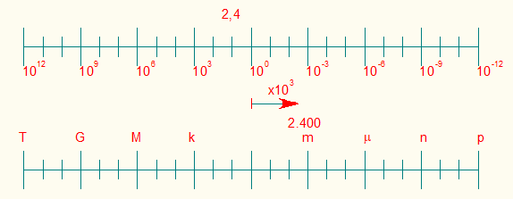
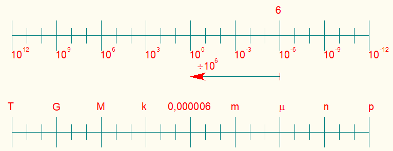
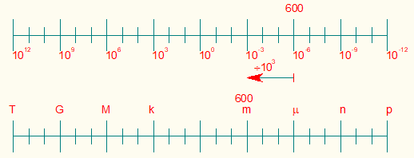

Apostila - Notação Científica - José Antonio Sanches Lapaz
1 - Introdução
Notação científica nada mais é do que uma maneira de simplificar a visualização dos números em engenharia, e deste modo facilitar o cálculo devido a números muito grandes ou muito pequenos.
Em uma calculadora de quatro operações, por exemplo, a quantidade máxima de digitos é “oito”, isto nos dá um limite para cálculos com valores de até oito digitos.
Já com a notação científica podemos trabalhar números muitos maiores, mesmo as calculadoras científicas possuem uma limitação, devido ao armazenamento de valores ter um valor finito, mas podemos trabalhar com a notação científica tranquilamente, pois não iremos ultrapassar este valor.
Notação científica em potência de 10 (SI):
| Múltiplos e Submúltiplos | |||
|---|---|---|---|
| Descrição | Símbolo | Potência de 10 | Valor nominal |
| Yotta | Y | 1024 | 1.000.000.000.000.000.000.000.000 |
| Zetta | Z | 1021 | 1.000.000.000.000.000.000.000 |
| Exa | E | 1018 | 1.000.000.000.000.000.000 |
| Peta | P | 1015 | 1.000.000.000.000.000 |
| Tera | T | 1012 | 1.000.000.000.000 |
| Giga | G | 109 | 1.000.000.000 |
| Mega | M | 106 | 1.000.000 |
| Quilo | k | 103 | 1.000 |
| 100 | 1 | ||
| mili | m | 10-3 | 0,001 |
| micro | µ | 10-6 | 0,000001 |
| nano | n | 10-9 | 0,000000001 |
| pico | p | 10-12 | 0,000000000001 |
| fento | f | 10-15 | 0,000000000000001 |
| atto | a | 10-18 | 0,000000000000000001 |
| zepto | z | 10-21 | 0,000000000000000000001 |
| yocto | y | 10-24 | 0,000000000000000000000001 |
""
Apostila - Notação Científica - José Antonio Sanches Lapaz
Outros símbolos:
| Múltiplos e Submúltiplos | |||
|---|---|---|---|
| Descrição | Símbolo | Potência de 10 | Valor nominal |
| hecto | h | 102 | 100 |
| deca | da | 101 | 10 |
| 100 | 1 | ||
| deci | d | 10-1 | 0,1 |
| centi | c | 10-2 | 0,01 |
1.1 - A notação científica
A notação científica serve para expressar números muito grandes ou muito pequenos. O segredo é multiplicar um número pequeno ou grande por uma potência de 10. A forma de uma notação científica é: m x 10e ou m . 10e.
Onde:
m significa mantissa;
e “e” significa ordem de grandeza.
A mantissa sempre será um valor entre 1 e 999, esses valores podem ser positivos ou negativos.
2,5 x 10e
26,58 x 10e
550,97 x 10e
""
Apostila - Notação Científica - José Antonio Sanches Lapaz
Já o expoente vária de três em três, positiva ou negativamente, ou seja de mil em mil, tanto dividindo quanto multiplicando.
2,5 x 103
26,58 x 10-12
550,97 x 10-9
Assim podemos observar na “figura 1” o que foi dito até o momento:

Observemos um exemplo prático do que foi transcrito anteriormente, com os expoentes positivos, pegamos o 2,5 x 103 e o posicionamos na tabela, como mostrado na figura 2:
então multiplicamos o valor por mil e sabemos o valor representado de forma natural:
2,5 x103 = 2,5 x 1.000 = 2.500
Observamos, também, esta disposição de outra forma como abaixo demonstrado na figura 3:
Montamos o nosso sistema de outra forma:
103 = 10 x 102 = 10 x 10 x 101 = 10 x 10 x 10, assim nosso cálculo será,
2,5 x 103 = 2,5 x 10 x 102 = 25 x 102 = 25 x 10 x 101 = 250 x 10 = 2500
Façam agora paraos seguintes valores
a) 3,6 x 106
b) 550,97 x 109
c) 26,58 x 1012
""
Apostila - Notação Científica - José Antonio Sanches Lapaz
Observemos, agora, um exemplo prático do que foi transcrito anteriormente, com os expoentes negativos, pegamos o 2,5 x 10-3 e o posicionamos na tabela, como mostradona figura 4:

então multiplicamos o valor por mil e sabemos o valor representado de forma natural:
2,5 x-3 = 2,5 x 0,001 = 0,0025
Observamos, também, esta disposição de outra forma como abaixo demonstradona figura 5:
Montamos o nosso sistema de outra forma:
10-3 = 0,1 x 10-2 = 0,1 x 0,1 x 10-1 = 0,1 x 0,1 x 0,1, assim nosso calculo será,
2,5 x 10-2 = 2,5 x 0,1 x 10-2 = 0,25 x 10-2 = 0,25 x 0,1 x 10-1 = 0,025 x 10-1 = 0,025 x 0,1 = 0,0025
Façam agora paraos seguintes valores
a) 3,6 x 10-6
b) 550,97 x 10-9
c) 26,58 x 10-12
1.2 – Múltiplos e submúltiplos
Abaixo mostramos as tabelas com múltiplos e submúltiplos mais usados na área técnica ou de engenharia elétrica:
| Múltiplos e submúltiplos mais comuns de resistência elétrica: | |||
|---|---|---|---|
| MΩ | Megaohm | 106 Ω | 1.000.000 Ω |
| kΩ | Quiloohm | 103 Ω | 1.000 Ω |
| Ω | Ohm | 100 Ω | 1 Ω |
| mΩ | miliohm | 10-3 Ω | 0,001 Ω |
""
Apostila - Notação Científica - José Antonio Sanches Lapaz
| Múltiplos e submúltiplos mais comuns de capacitância elétrica: | |||
|---|---|---|---|
| mF | miliFarad | 10-3 F | 0,001 F |
| µF | microFarad | 10-6 F | 0,000001 F |
| nF | nanoFarad | 10-9 F | 0,000000001 F |
| pF | picoFarad | 10-12 F | 0,000000000001 F |
| Múltiplos e submúltiplos mais comuns de indutância elétrica: | |||
|---|---|---|---|
| H | Henry | 100 H | 1 H |
| mH | miliHenry | 10-3 H | 0,001 H |
| µH | microHenry | 10-6 H | 0,000001 H |
| nH | namoHenry | 10-9 H | 0,000000001 H |
| Múltiplos e submúltiplos mais comuns de tensão elétrica: | |||
|---|---|---|---|
| MV | MegaVolt | 106 V | 1.000.000 V |
| kV | QuiloVolt | 103 V | 1.000 V |
| V | Volt | 100 V | 1 V |
| mV | miliVolt | 10-3 V | 0,001V |
| Múltiplos e submúltiplos mais comuns de corrente elétrica: | |||
|---|---|---|---|
| kA | QuiloAmpere | 103 A | 1.000 A |
| A | Ampere | 100A | 1 A |
| mA | miliAmpere | 10-3 A | 0,001 A |
| µA | microAmpere | 10-6 A | 0,00000 A |
""
Apostila - Notação Científica - José Antonio Sanches Lapaz
| Múltiplos e submúltiplos mais comuns da potência elétrica: | |||
|---|---|---|---|
| GW | GigaWatt | 109 W | 1.000.000.000 W |
| MW | MegaWatt | 106 W | 1.000.000 W |
| kW | QuiloWatt | 103 W | 1.000 W |
| W | Watt | 100 W | 1 W |
1.3 - Exercícios resolvidos:
1) Transformar 5.000.000 V em kV:

| Resolução |
|---|
| 5.000.000 V ⇒ x kV = (5.000.000 ÷ 1.000) kV = 5.000 kV |
2) Transformar 0,0000056 A em μA:

""
Apostila - Notação Científica - José Antonio Sanches Lapaz
| Resolução |
|---|
| 0,0000056 a ⇒ x µA = (0,0000056 × 1.000.000) µA = 5,6 µA |
3) Transformar 2,4 W em mW:

| Resolução |
|---|
| 2,4 W ⇒ x mW = (2,4 × 1.000) mW = 2.400 mW |
4) Transformar 6 μW em W:

| Resolução |
|---|
| 6 µW ⇒ x W = (6 ÷ 1.000.000) W = 0,000006 W |
""
Apostila - Notação Científica - José Antonio Sanches Lapaz
5) Transformar 600 μW em mW:

| Resolução |
|---|
| 600 µW ⇒ x mW = [(600 ÷ 1.000) × 1.000] mW = 600 mW |
1.4 – Exercícios propostos:
1) Preencha as lacunas que faltam:
| Múltiplos | |||
|---|---|---|---|
| T | |||
| 1.000.000.000 | |||
| Mega | |||
| 103 | |||
| Múltiplos | |||
|---|---|---|---|
| m | |||
| 0,000001 | |||
| nano | |||
| 10-12 | |||
""
Apostila - Notação Científica - José Antonio Sanches Lapaz
2) Efetue as conversões abaixo:
a) 12 V em mV
| Faça a resolução do exercício |
|---|
b) 0,0000235 A em μA
| Faça a resolução do exercício |
|---|
c) 589.000 W em MW
| Faça a resolução do exercício |
|---|
""
Apostila - Notação Científica - José Antonio Sanches Lapaz
d) 0,005 nV em pV
| Faça a resolução do exercício |
|---|
e) 5.125 A em kA
| Faça a resolução do exercício |
|---|
1.5 – Resolução dos exercícios propostos:
1) Pressione o botão e observe as lacunas que faltam:
| Múltiplos | |||
|---|---|---|---|
| T | |||
| 1.000.000.000 | |||
| Mega | |||
| 103 | |||
| Submúltiplos | |||
|---|---|---|---|
| m | |||
| 0,000001 | |||
| nano | |||
| 10-12 | |||
2) Pressione o botão e observe a resolução das conversões abaixo:
a) 12 V em mV
| Faça a resolução do exercício |
|---|
b) 0,0000235 A em μA
| Faça a resolução do exercício |
|---|
c) 589.000 W em MW
| Faça a resolução do exercício |
|---|
d) 0,005 nV em pV
| Faça a resolução do exercício |
|---|
e) 5.125 A em kA
| Faça a resolução do exercício |
|---|
1.6 – Transformação de uma base para diversas bases:
Coloque o valor no quadro de entrada e pressione o botão e verifique os valores com as potências de 10 distintas no quadro abaixo.
| Múltiplos | x 1012 | Tera (T) | |
|---|---|---|---|
| x 109 | Giga (G) | ||
| x 106 | Mega (M) | ||
| x 103 | Quilo (k) | ||
|
|
x 100 | - | |
| Submúltiplos | x 10-3 | mili (m) | |
| x 10-6 | micro (µ) | ||
| x 10-9 | nano (n) | ||
| x 10-12 | pico (p) |
1.7 – Transformação de uma base para outra bases:
Coloque o valor no quadro de entrada e pressione o botão e verifique os valores com as potências de 10 distintas no quadro abaixo.
| Valor | Símbolo | |